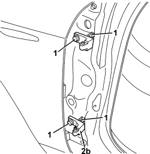

7005A24 FRONT SIDE DOOR HINGES (BOLTED) - R.R. WITH DOOR DETACHED
- Path
- Procedures > 70 FITTINGS > 7005 PASSENGER COMPARTMENT FRONT SIDE DOORS > 7005A FRONT DOOR ASSEMBLY > 7005A24 FRONT SIDE DOOR HINGES (BOLTED) - R.R. WITH DOOR DETACHED
- Kind
- repair procedure (removal / refitting; the operation number is the code)
- Applies to
- all engines; all production periods
- Interactive page
- https://sloeber94.github.io/elrnDB-aBrrSpdr/en/#/946002492
Applies to: all engines; all production periods
 Removing
Removing
 Refitting
Refitting- For the left door upper hinges.
Op. 7040A04 DASHBOARD LOWER TRIM - R.R.
Op. 7040A37 FUSE BOX COVER IN INSTRUMENT PANEL - R.R
Op. 5505A35 MAIN BODY COMPUTER/JUNCTION UNIT - R.R.
- For the right door upper hinges.
Op. 7040A04 DASHBOARD LOWER TRIM - R.R.
Op. 7040A65 CONSOLE SIDE CLOSING (ONE) - R.R.
Op. 7040G20 BULB HOLDER FOR COMPARTMENT LIGHTING IN DASHBOARD - R.R.
Op. 7040A31 DASHBOARD COMPARTMENT ASSEMBLY - R.R.
- For the lower hinges on both doors.
Op. 7040L40 FRONT DOOR RUNNING BOARD (ONE), LEFT OR RIGHT - R.R.
1. Undo the bolts fixing the half hinges to the bodyshell.
2. Remove the half hinges (2a) and (2b).

Applies to: all engines; all production periods
Refitting
Removing- Check that the half hinges are not damaged.
- Position the half hinges and screw in the bolts without tightening them.
- Refit the components removed to access the hinge fixing bolts.
Op. 7040L40 FRONT DOOR RUNNING BOARD (ONE), LEFT OR RIGHT - R.R.
Op. 7040A31 DASHBOARD COMPARTMENT ASSEMBLY - R.R.
Op. 7040G20 BULB HOLDER FOR COMPARTMENT LIGHTING IN DASHBOARD - R.R.
Op. 7040A65 CONSOLE SIDE CLOSING (ONE) - R.R.
Op. 5505A35 MAIN BODY COMPUTER/JUNCTION UNIT - R.R.
Topics linked from this page (8)
- 5505A35 MAIN BODY COMPUTER/JUNCTION UNIT - R.R.
- 7005A14 FRONT SIDE DOOR - ADJUST CENTERING AND MOULDING - INCLUDES ADAPTATION OF HINGES AND SEALS ON DOOR COMPARTMENT
- 7040A04 DASHBOARD LOWER TRIM - R.R.
- 7040A31 DASHBOARD COMPARTMENT ASSEMBLY - R.R.
- 7040A37 FUSE BOX COVER IN INSTRUMENT PANEL - R.R
- 7040A65 CONSOLE SIDE CLOSING (ONE) - R.R.
- 7040G20 BULB HOLDER FOR COMPARTMENT LIGHTING IN DASHBOARD - R.R.
- 7040L40 FRONT DOOR RUNNING BOARD (ONE), LEFT OR RIGHT - R.R.